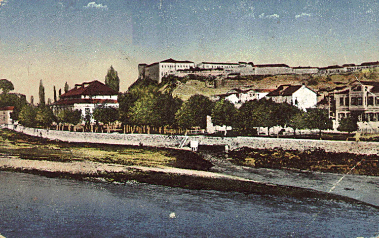
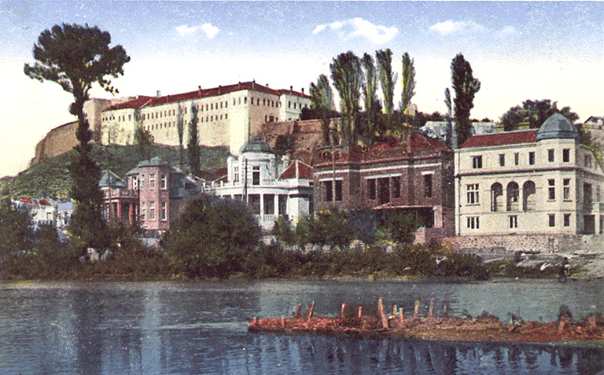

Kale
- Yapım
- UFUŽ ve Prag Belgesel Filmi
- Senaryo ve yönetmen
- Slavko Janevski ve EMAN CANERA
- Yıl
- 1959
- Süre
- 00:10

Üsküp Kalesi'nin girişi. (20. yüzyılın başı)
Üsküp şehir merkezinin en hâkim yerlerinden birini Üsküp Kalesi - Kale* kaplar. Kazılar Kale'nin daha tarih öncesi çağlarda, Neolitik ve Erken Tunç Çağı'nda yerleşim yeri olduğunu gösterdi. İnsanlar olağanüstü stratejik konumu nedeniyle Kale'de yaşadı. Yapının incelenmesi, temellerinde 518'deki yıkıcı depremde neredeyse tamamen yıkılan Scupi'den malzeme kullanıldığını gösterdi. O depremden sonra şehir bugünkü yerine taşındı. Bir tahkimat yapıldı ve yüzyıllar boyunca genişletilip güçlendirildi. Bugün yalnızca küçük bir kısmı kalmıştır; restore edilmiş, ortasında bir gezinti yolu düzenlenmiştir.
* (Kale Türkçede kale, hisar demektir; halk bu kelimeyi Üsküp hisarının kısa adı olarak benimsedi)

Surlarının bir bölümüyle Üsküp Kalesi.
- 20. yüzyılın başı

Üsküp Kalesi - 1910'lar.

Üsküp Kalesi - bugünkü park tarafından çekildi, 19. yüzyılın sonu.

Üsküp Kalesi - 1910'lar.

Üsküp Kalesi - 1910'lar.

Üsküp Kalesi. Bugünkü parkın yerinden çekildi, 1910'lar.

Üsküp Kalesi. Bugünkü parkın yerinden çekildi, 1910'lar.

Üsküp Kalesi'nin görünümü. 1920'ler.

Kuzey tarafından Üsküp Kalesi'nin görünümü.
- 1910'lar.

Şehrin ve Vardar'ın akışının güzel bir fotoğrafı. Solda Üsküp Kalesi. Ortada Subaylar Evi ve Milli Banka. Sağda Vodno dağı, uzakta Kitka dağının kenarları
.- 1920'lerin sonu.

Üsküp Kalesi ve oyuncuların toplandığı, ilk tiyatro gösterilerinin yapıldığı eski "Boges" kahvehanesi - 20. yüzyılın başı.

Kışlalarıyla Üsküp Kalesi - 1911. Kalenin altında eski "Boges" kahvehanesi görülüyor.

Üsküp Kalesi ve eski "Boges" kahvehanesi
- 1910'ların sonu.

Fotoğraf 1910 civarında Taş Köprü'den çekildi. Solda eski Türk tiyatrosu, üzerinde Üsküp Kalesi görülüyor.

Fotoğraf 1910 civarında Taş Köprü'den çekildi. Solda eski Türk tiyatrosu, üzerinde Üsküp Kalesi görülüyor.

Üsküp Kalesi ve altındaki eski Yahudi mahallesi - 1910'ların sonu.

Üsküp Kalesi ve Yahudi mahallesinde inşa halindeki bazı evler - 1920'ler.

Üsküp Kalesi ve altında Yahudi mahallesinin bazı evleri - 1920'ler.

Üsküp Kalesi ve Yahudi mahallesinde yeni inşa edilen evler - 1920'ler.

Yahudi mahallesinin bazı evleriyle Üsküp Kalesi - 1920'ler.

Üsküp Kalesi ve Yahudi mahallesinde yeni inşa edilen evler - 1920'ler.

Üsküp Kalesi. Altında Yahudi mahallesinin bazı evleri var - 1920'ler.

Üsküp Kalesi ve Yahudi mahallesinde yeni inşa edilen evler - 1920'ler.

Yahudi mahallesinin sokaklarından birinden Üsküp Kalesi'nin görünümü - 1920'ler.

Subaylar Evi'nden çekilen fotoğraf - 1930 civarı. Milli Tiyatro'nun, küçük ahşap köprünün ve Üsküp Kalesi'nin harika bir görünümü.

Ön planda Milli Tiyatro, üzerinde Üsküp Kalesi yükseliyor - 1930'lar.

Üsküp Kalesi'nin, tahkimatın bölümlerinin açıkça görüldüğü bir fotoğrafı. Kalenin altında Milli Tiyatro bütün güzelliğiyle görülüyor.
- 1930'lar.

Üsküp Kalesi'nin, tahkimatın bölümlerinin açıkça görüldüğü bir fotoğrafı. Kalenin altında Milli Tiyatro görülüyor - 1930'lar.

Ön planda Milli Tiyatro, üzerinde Üsküp Kalesi yükseliyor - 1950'ler.

 Su kemeri4 kartpostal
Su kemeri4 kartpostal Kale30 kartpostal
Kale30 kartpostal Köprüler60 kartpostal
Köprüler60 kartpostal Rıhtım58 kartpostal
Rıhtım58 kartpostal Meydan46 kartpostal
Meydan46 kartpostal Binalar66 kartpostal
Binalar66 kartpostal Hristiyan kiliseleri19 kartpostal
Hristiyan kiliseleri19 kartpostal İslami yapılar33 kartpostal
İslami yapılar33 kartpostal Subaylar Evi29 kartpostal
Subaylar Evi29 kartpostal Tiyatro28 kartpostal
Tiyatro28 kartpostal Tren garı13 kartpostal
Tren garı13 kartpostal Okullar36 kartpostal
Okullar36 kartpostal Parklar12 kartpostal
Parklar12 kartpostal Pazarlar18 kartpostal
Pazarlar18 kartpostal Sokaklar38 kartpostal
Sokaklar38 kartpostal Panorama I60 kartpostal
Panorama I60 kartpostal Panorama II30 kartpostal
Panorama II30 kartpostal Kolajlar55 kartpostal
Kolajlar55 kartpostal Seller9 kartpostal
Seller9 kartpostal Deprem27 kartpostal
Deprem27 kartpostal Üsküp 200026 kartpostal
Üsküp 200026 kartpostal